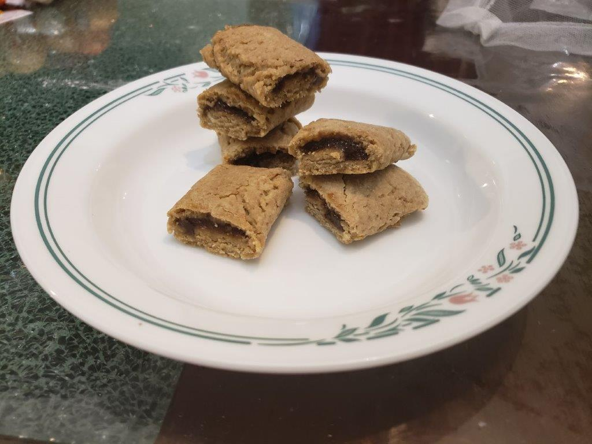

Fig Newtons

Ingredients:
Cookie Dough:
- 1/2 cup Salted butter, softened
- 1/4 cup Brown sugar, packed
- 1 Egg
- 1 tsp Vanilla extract
- 1 tsp Orange zest
- 1 cup All-purpose flour
- 3/4 cup Whole wheat flour
- 1/2 tsp Baking powder
- 1/4 tsp Salt
Fig Jam Filling:
- 1 lb Fresh figs, stems removed and quartered
- 1 tbsp Orange juice
- 1/2 cup Sugar
- 1/8 tsp Cinnamon
Instructions:
Cookie Dough:
- In a large bowl, cream the butter and sugar until light and fluffy. Beat in the egg, vanilla extract, and orange zest until well combined.
- Add the flours, baking powder, and salt. Mix until a soft cookie dough forms. With your hands, shape the dough into a ball. Wrap the ball in plastic wrap and refrigerate until firm, 1 hour.
Fig Jam Filling:
- Heat everything together in a saucepan over medium-low or low heat, stirring often, until the figs are soft, about 30 minutes. Then transfer the mixture to a blender or food processor and blend until smooth.
- Transfer the jam back to the saucepan and heat over low of 20-25 mintues, stirring constantly, until very thick. The finished jam should be so thick that it holds soft peaks.
Combining:
- Preheat oven to 325 degrees Fahrenheit and line a baking tray with parchment paper.
- On a floured surface, roll the chilled dough into a 10 inch x 14 inch rectangle. Use a knife or pizza cutter to make the outer edges even.
- Cut the dough into three strips of roughtly 3.5 inches wide. Divide the fig filling paste between each strip of dough, forming it into a 1 inch wide line down the center of each strip.
- Carefully fold each edge of dough over the top of the fig paste, making a log. Press gently on the seam to seal the dough slightly.
- Place the logs seam side down onto your linked baking sheet, spacing them about 2 inches apart. Bake the cookies for 17-20 minutes, until the logs feel dry and slightly firm when touched.
- Remove the cookies from oven and cut each log into 8-9 cookies while they are still warm. While still warm, place the cut cookies into an airtight container. This will soften the cookies as they cool.